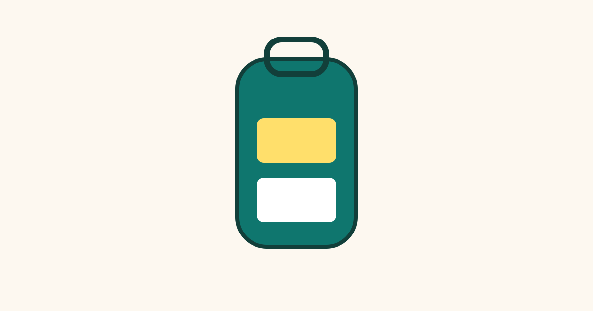

How to Pack a Bag So Everything Fits

Packing a bag often feels like a puzzle. You lay out everything you want to take, and it looks far too much for the space available. The secret is not a bigger bag. It is a better order. When you choose items carefully, fold or roll them in the right way, and fill every gap with purpose, the same bag can hold much more, and you can still find things when you need them. This guide gives you a simple method that works for a weekend trip, a work bag, or a longer journey.
Step 1: Start With a List, Not With the Bag
- Write down what you need for each day, including clothes, toiletries, chargers, and documents.
- Cross out anything you could borrow, buy at your destination, or manage without for a short time.
- Lay everything out on a bed or table so you can see the full pile before you start packing.
Starting with a list prevents the most common packing problem: adding items "just in case" until the bag is full. When you can see the whole pile, it is easier to notice duplicates, such as two similar jackets or three pairs of shoes. Choose clothes that can be mixed and matched, so fewer items create more outfits. Neutral colours help here, because the same trousers or skirt can work with several tops.
Step 2: Pack Heavy Items First, at the Bottom
- Place shoes, books, and heavy toiletries at the bottom of the bag, close to the wheels if it is a wheeled case.
- Put shoes in bags or covers so they do not mark your clothes, and stuff socks inside shoes to use the empty space.
- Keep liquids in a sealed bag, near the top or in an outer pocket, so they are easy to reach and easy to check.
Heavy items at the bottom keep the bag balanced and stop it from tipping over. They also stop lighter clothes from being crushed under their weight. If you pack heavy items on top, they press down on everything below and create wrinkles. A balanced bag is also easier to carry, because the weight sits closer to your body or to the wheels, rather than pulling you off balance.
Step 3: Roll Soft Clothes and Fold Stiff Ones
- Roll T-shirts, knitwear, and casual trousers tightly. Rolling removes air and helps the items fit into corners.
- Fold shirts, blazers, and stiff trousers neatly instead, so they keep their shape and crease less.
- Place rolled items in rows, like logs, and fill small gaps with underwear, socks, and belts.
Rolling works well for soft fabrics because they spring back into shape when unrolled. Stiff fabrics, on the other hand, can develop hard creases if rolled too tightly, so folding is kinder to them. The real trick is to think of the bag as a container to fill completely, not just a box to stack things in. Small items are perfect for gaps between larger ones, and they stop clothes from sliding around during travel.
Step 4: Keep Essentials Within Easy Reach
- Put travel documents, a phone charger, medication you need during the journey, and a snack in an outer pocket.
- Keep one change of clothes in your hand luggage if you are travelling by plane or bus, in case your main bag is delayed.
- Place items you will need first at the top of the bag, and items you will need last at the bottom.
A well-packed bag is not only about fitting things in. It is also about getting things out without unpacking everything. If your toothbrush is buried under three days of clothes, you will disturb the whole bag for a two-minute task. Packing in the order you will use things saves time and keeps the bag tidy for the whole trip, not just for the first hour.
Common Mistakes
One common mistake is packing for every possible situation instead of the most likely ones. A heavy coat, an umbrella, and a rain jacket for a short summer trip take up space that could hold clothes you will actually wear. Another mistake is folding everything the same way. Bulky folds leave air pockets, while a mix of rolling and folding uses the space far better.
People also forget to check the bag before they close it. Zips strain, seams stretch, and pockets bulge when a bag is overfilled. If you have to sit on the bag to close it, something needs to come out. Finally, do not leave empty space at the top. Loose items shift during travel, which causes wrinkles and makes the bag feel heavier than it needs to be.
Frequently Asked Questions
Should I roll or fold my clothes?
Roll soft, casual clothes to save space, and fold stiff or formal clothes to protect their shape. Using both methods together usually gives the best result.
How can I avoid wrinkles?
Pack clothes tightly so they cannot move much, fold formal items carefully, and hang them up as soon as you arrive. A quick shake before hanging also helps smooth out light creases.
What is the best way to pack shoes?
Place shoes at the bottom of the bag, in covers, with socks stuffed inside. This protects your clothes and uses space that would otherwise be wasted.
How do I pack for a short trip in one small bag?
Choose a simple colour scheme, pack clothes you can wear more than once, and limit shoes to two pairs at most. A list helps you stay honest about what you truly need.
Conclusion
Packing well is a skill, not a talent. A short list, heavy items at the bottom, a mix of rolling and folding, and essentials within reach will make almost any bag work harder. Try this method once, notice what you did not use, and adjust your list for next time. Soon, packing will feel less like a struggle and more like a quick, calm routine before every trip.